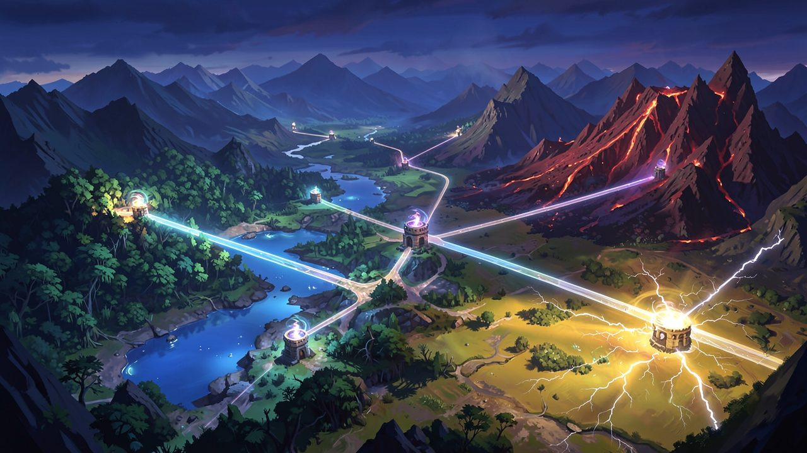
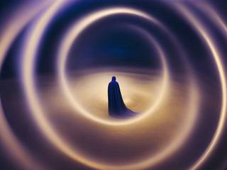
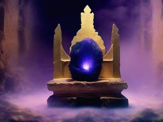
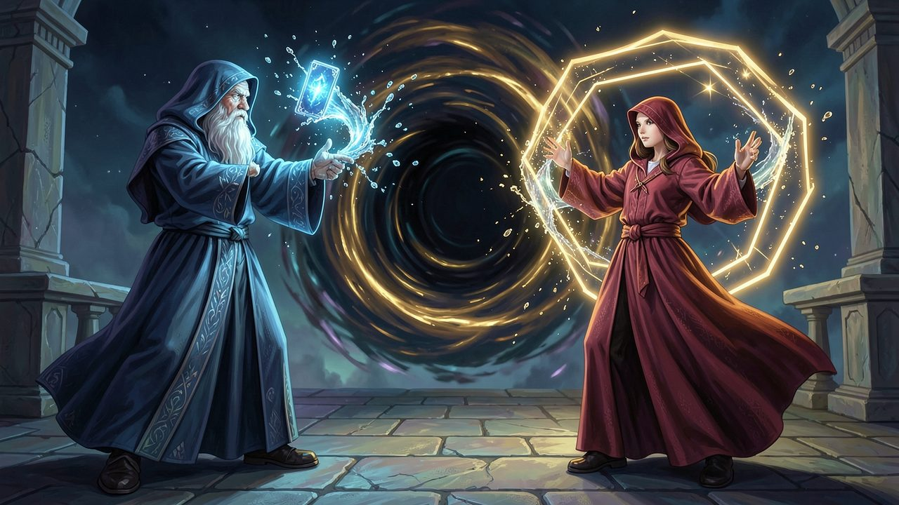
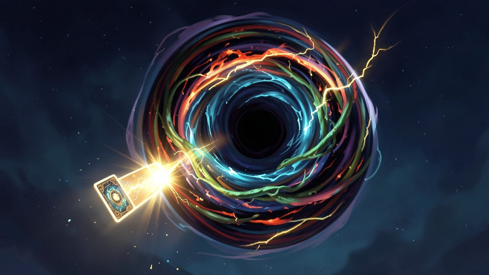
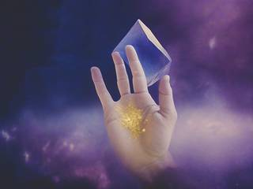
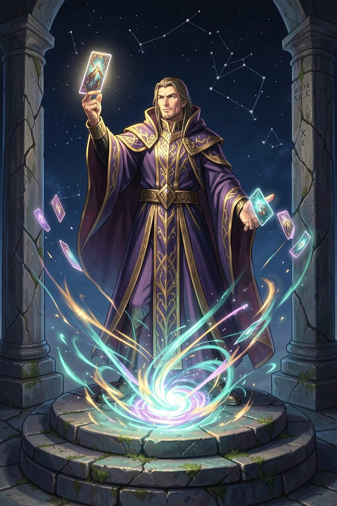

Free to forkNo licence and no copyright claim: build this game under your own name, or lift one idea from it. Why?
Game overview
Ultimate Card is a duelling card game in the family of UNO and mau-mau, played by rival wizards around a singularity they cast together. Every card thrown in feeds it an element. Whoever plays their last card claims everything it has gathered, and every other wizard takes the cards still in their hand as damage.
It's a singleplayer game against computer wizards, two to six at a table, climbing a ladder of tables to each region's archmage in the style of Street Fighter II's arcade mode. The rules start from the ones everybody knows and add what a duel needs: elements that react and detonate, counter cards that turn an attack around, a light and a dark face on every card, and a wizard's own powers, charged by the punishment they take.
Ultimate Card is the fiercest of three games designed on the same card engine. Its siblings are the cozy campfire of Bonfire and the greedy gamblers of Power Pile.
Target audience
Players who love card battlers and fighting-game ladders, the Pokémon card game, Advance Wars' commander powers, but find deckbuilders slow and heavy going.
They want the speed of UNO with the depth of a duel: a turn that takes seconds and a combination that takes the whole table apart.
It's played with the mouse. The basics are known to everyone; the depth is in how the elements, counters and powers combine, and every card explains itself on a right click.
Game's purpose
Power: a finishing card that doubles the damage, a Super Power saved for the right moment.
Mastery: reading the singularity's buildup, timing a counter, choosing when to go out.
Excitement and variety: chains that grow around the table, and every table rolled up differently.
It deliberately avoids draining fairness (every rule is visible and the computer wizards play by the same ones) and the player's time (stop between any two tables).
Core concept
Card battlers tend to keep their best cards behind packs, unlocks and rarity grinds, and their campaigns end.
Here every card, skill and wizard is available from the start, and rarity only means how often a card turns up in a match. The power you take from archmages is the one thing you gather, and you can only hold five at a time.
The realm never runs out of convergences, so there's always another ladder to climb.

"Wherever the realm's lines of power cross, the sky wears thin, and the wizards gather to cast a singularity together."
Lore and story
The convergences
The realm is crossed by lines of power, and wherever they cross, the sky wears thin. No single wizard can open it. A gathering of them can: standing in a circle, they cast a singularity between them and take turns feeding it with spells, each one a card from their hand.
The singularity takes everything it's given and holds it. When one wizard finally lays down their last spell, it collapses into them, and the power it gathered is theirs.
The wizards

Every wizard wants that power, and every one of them has a reason and a temperament: the hoarder who sits on a full hand, the hothead who attacks at every chance, the trickster who swaps and flips, the warden who waits behind shields, the gambler who throws in the most dangerous card in the deck to see what happens. You pick yours from the same roster, the way you'd pick a fighter in Street Fighter II.
The archmages

Each region's great convergence is held by an archmage, who came by their seat the same way and wears its proof: a crystal of concentrated power, a core, that gives them an edge nobody else at the table has. The lesser wizards of the region sit at their tables and learn their tricks.
The quest
Ultimate power, the stories say, waits for whoever claims them all. Nobody ever has, because the realm keeps making new crossings at its edges. What you can do is climb one region's ladder, take its archmage's seat, and watch the land around that convergence turn to your element. Then pick the next one.
Controls and interface
The table is seen from your place in the circle: your hand at the bottom, the singularity in the middle with its current element and buildup, and the other wizards around it with their faces, life, hand sizes and power meters. Everything works with the mouse; the keys are shortcuts.
Your hand
Click
Pick a card; click more of the same number to make a set
Drag
Reorder your hand, or the set you're about to play
Right click
Read a card, both its faces
Click a wizard
Choose the target of a targeted card
The table
Space
Cast the picked cards into the singularity
D
Draw a card, up to three a turn
Q / W
Use your Power / your Super Power
Enter
End your turn
Tab
Table overview: life, hands, buildup, cores
Counter cards are played out of turn: when something is aimed at you, the cards in your hand that can answer it light up, and the game waits a moment for you to choose. When any wizard is down to one card, a warning appears above them automatically.

"Attacks can be passed on. Answer with the same spell and it moves to the next wizard, carrying yours with it."
Game layers
01 · Moment-to-moment
A turn in the circle
Read the singularity: its element, how high it's built up, who's on one card, whose power meter is nearly full. Then decide whether to feed the buildup, detonate it into the next wizard, hold a counter, or quietly empty your hand.
A turn takes seconds. The duel is in the sequence: the card you leave on top for the next wizard, the chain you choose to pass on, the last card you've been keeping.
02 · Low metagame
A ladder to the archmage
A region is a small map of convergences in the style of Super Mario Bros. 3, six to eight tables joined by paths with a few forks, and the archmage's seat at the end. Each table is rolled up on its own: two to six wizards, every one for themselves or in teams, how many cards everyone starts with, how many elements are in play, extra cards or extra rules, sometimes a curse card already in every hand.
A table ends when one wizard or one team is left standing. If it isn't you, the winner claims that convergence and the ladder carries on at the next table; the lost one stays in their colors on the map until you come back for it on another night. The archmage's table is the same, with one difference: the archmage brings extra consumables and their core.
03 · High metagame
The realm and the chronicle
The regions sit together on a map of the realm. Every convergence you claim reshapes the land around it in your element, so a water wizard's realm floods into lakes and rivers and a plant wizard's grows into forest, and the map becomes a picture of where you've been. The realm offers the next ladders from it: regions next to your lands, regions held by rivals, new crossings opening at the edges.
Every claimed singularity is written into the chronicle with the seed of its table, so any duel can be played again from its first card. Read back, the chronicle tells each victory the way bards do: the replay of its last moments comes back three times as bombastic as it was.
04 · Practical game flow
A duel or a whole region
The game opens on the realm map. Carry on with the ladder you're climbing, or choose the kind of session you want and the realm offers one to match: a single table for fifteen minutes, a ladder for an evening or two, or a chaos table with its rules rolled at random. Whatever you choose counts toward the same realm.
Stop between any two tables, or in the middle of one, and it waits where you left it.
The realmEndless: claimed lands, rival lands, new crossings at the edges.
A ladderSix to eight tables and an archmage: an evening or two.
A tableRounds until one wizard or team stands: ten to twenty minutes.
Game modes
Every table is one of two kinds. The ladder rolls which, unless you've asked for one.
Mode
How it plays
What it's for
Free for all
Two to six wizards, each for themselves; a two-wizard table is a straight duel
The classic game, with every spell aimed wherever you like
Teams
Two or three sides of fairly even size (2v2, 3v3, 2v2v2, 2v3); attacks only touch the other side, and a side is beaten when all its wizards are. An uneven table (one against three) is a David and Goliath match, with handicaps that make it fair
Feeding a partner the elements they need, and holding a counter for them
Features and mechanics
The heart of it
The singularity and the finish
The deck is endless and the singularity is never shuffled back into it: every card played stays in, and its count only grows. Each wizard has a life total set by the table. When someone plays their last card, every other wizard takes damage equal to the cards still in their hand: numbers count their face value, action cards twenty, legendary cards fifty. A wizard at zero life is out, and so is a wizard who ends up holding twenty-five cards, crushed by their own hand. The others play the next round, until one is left.
So the goal is not only to go out but to go out when the others are holding the most, which changes everything about when you play your attacks. Two cards make the finish bigger:
The last card: going out with a whole set is allowed, but a single card held back and played alone on a later turn deals half again as much. While you wait, everyone can see you're on one card.
The atom card: a rare card that doubles the damage if it's the last card you play, and is an ordinary wild otherwise.
A singularity can hold 999 cards. If it ever reaches that, it collapses on its own, and the wizard with the fewest cards claims it.

"When a wizard plays their last card, every other wizard takes the cards still in their hand as damage."
Colors that fight
The elemental chart
The card colors are elements, after the energy types of the Pokémon card game, and they don't just match; they act on each other. A table plays with four, six or all of them:
Element
What it does to the others
Water
Beats fire, washes away ground
Fire
Beats plant, blows up with electric
Plant
Beats water, grows into ground
Electric
Explodes fire, electrocutes water and plant
Ground
Fire and electric can't be cast onto it; nourishes plant; blocks the next wizard unless they can get through
Psychic
Passes through everything but plant and electric, and turns the direction of play around
Metal
Blocks water, plant and ground; fire and electric melt through it
Aether
Distorts the next card played into a stronger or a weaker version of itself
Null
Grey: fits on anything and clears every buildup
Every cast is one of five things: neutral (the two elements ignore each other), same element (it builds up), strong against (it can set off what's built up), resisted (not allowed at all) or blocked (the next wizard misses their turn unless they hold a card that gets through).
Charge and release
Buildups and detonations
Cards of one element cast one after another build up in the singularity: two is a small charge, three medium, four heavy, and five or more a nuke, which is as strong as it gets. Cast the right element onto a built-up charge and it detonates into the next wizard, at the strength of the charge:
Detonation
Cast
What it does
Mudslide
Water onto ground
Buries the next wizard: they draw and miss their turn
Smokescreen
Water onto fire
Hides you: attacks pass you by until your next turn
Explosion
Fire onto electric
The next wizard draws heavily
Firestorm
Fire onto plant
Every other wizard draws
Plasma
Electric onto fire
The next wizard draws two for every fire card in the charge, and no shield stops it
Stun storm
Electric onto metal
Skips the next wizards, more of them the bigger the charge
Mutation
Plant onto psychic
Turns cards in the next wizard's hand into random others
Overgrowth
Plant onto ground
The next wizard draws until they find a plant card
Ground, metal and psychic never detonate. Stacked, they become a wall that blocks the next wizard, harder the higher it's built, and cast onto someone else's charge they defuse it. Any pairing not in the table is neutral.
Attack and answer
Chains and counters
Draw and skip attacks can be chained: answer one with the same kind of card and it moves on to the next wizard with yours added, growing around the table until it reaches someone who can't pass it on. Turning the direction around isn't an attack, so it can't be chained. And some cards answer an attack outright, played out of turn like the parries of Nanaca Crash:
Card
What it does
Hex +1 to +10
The next wizard draws; targeted versions hit the wizard you choose
Bind
The next wizard skips a turn (or several, or everyone, giving you a double turn); targeted versions too
Turn
Reverses the direction of play; the targeted version makes play skip toward the wizard you choose, and lingers until it reaches them
Prism
Wild: choose the next element; Prism Hunt makes the next wizard draw until they find it, up to ten
Cataclysm
Every wizard draws, you included, unless it's your last card: then you're spared, and it's your finish
Ward
Absorbs the attack aimed at you
Mirror
Sends the attack back to whoever cast it
Bend
Sends it to a wizard of your choice
Riposte
Sends it back doubled
Blink
Steps aside: the next wizard takes it instead
Scry
Reveals one wizard's hand to you, or every hand to the whole table until your next turn
Exchange
Swaps hands with a wizard, trades a card with them, or takes the card you want without giving one back
Any of these can come combined on one card: a single effect two to four times, or two to four effects at once.
Two sides of every spell
Light and dark
Every card has two faces. The light face helps its caster or keeps the peace: a ward for yourself, a card given away from your own hand. The dark face harms the others or sows chaos: the same card as a hex on the next wizard, or a swap of every hand around the table.
A match starts on the light side. A flip card turns the singularity dark, and with it every card in every hand, until another flip turns it back, much like UNO Flip. The two faces of each card are printed on it, so a flip changes your plans without hiding anything: right-click any card to see what it becomes.
Commander powers
Powers and skills
Every wizard has two signature abilities in the style of Advance Wars' commanders: a Power and a stronger Super Power. They charge from a meter that fills as you take punishment, every card you're forced to draw, so the wizard who's losing is the one closest to a comeback. A water wizard's Power might turn the whole buildup to water; their Super Power floods every other hand with two cards.
Before a ladder you also equip a few skills, passive bonuses in the style of Advance Wars: Dual Strike, within a budget: holding more cards before you're crushed, a free counter once per table, drawing one fewer card from every attack. Every skill is available from the start; the budget is the limit. Some cards in the deck are ability cards, which fire one of your equipped skills on the spot, and some abilities need a condition before they work.
Bring your own spells
Spellbooks
Each wizard sits down with a spellbook: the mix of cards and elements they bring to the table. The deck is endless, so a spellbook isn't a stack of cards but a recipe, and the singularity draws from everyone's recipes combined. A table of three fire wizards and a water wizard will be dealing a lot of fire, to everyone, including the water wizard.
You build yours from every card in the game, all of it available from the start, in the spirit of the Pokémon card game's deck rules. Rarity sets how often a card can turn up: numbers are common, skips and reverses uncommon, the bigger hexes rare, wilds and combined cards legendary. Cards can also be multi-element (two, three or four elements on one card, playable on any of them), or carry a hidden power that only works once its condition is met.
Taking their edge
Archmages and their cores

Each archmage carries a core, a crystal holding a passive edge that's theirs alone: every metal card they cast also blocks, or they shrug off the first hex of every round. It colors their whole region, since the wizards there lean toward the same element and tricks. An archmage also brings extra consumables to their own table.
Beat an archmage and their core is yours, to carry into later ladders. You can hold five; taking a sixth means letting one go. That's the limit that keeps any wizard, you included, from growing stronger forever, and it means your edge keeps changing with the archmages you've beaten.
Opponents with faces
Rival wizards
Every wizard reacts to the duel as it happens: idle glances around the table, a look when they lift a card (neutral, disgusted or excited, and some hide it better than others), anger when they're hit, a smug grin when they land an attack, delight when they go out, and a knockout when they're crushed, after which they sit out cold until the table is over.
Each computer wizard plays by its temperament, and the temperament shows: the hoarder hangs on to counters, the hothead chains every attack, the trickster can't resist a flip. Learning to read them is part of the game, just as it is with the people at a real table.
Trivia
Ultimate Card is one of three games split from a single design, a singleplayer "Super UNO" that tried to hold every card idea at once. The other two are Bonfire, a cozy one with no life totals and nobody knocked out, and Power Pile, a greedy one about the size of the pot. The design notes point out that life totals only make sense in the fiercer variants, which is why this is the only one of the three that has them.
The finishing rule comes from an old mobile UNO clone Reactorcore used to play, where the point was to go out while making sure everyone else was stuck holding as much as possible. The atom card is the jack of mau-mau, promoted.

A summons
Ultimate Card: Wizard Singularity Supremacy
By order of the convergence: the sky over the eastern ridge has worn thin. Five seats are laid around it. Bring your spellbook, your cores and whatever you're holding back.
Feed the singularity. Build the fire to a nuke, then hand it to the next wizard in plasma. Turn the hex back on the one who cast it. Keep your last card until the others are holding everything, and claim it all.